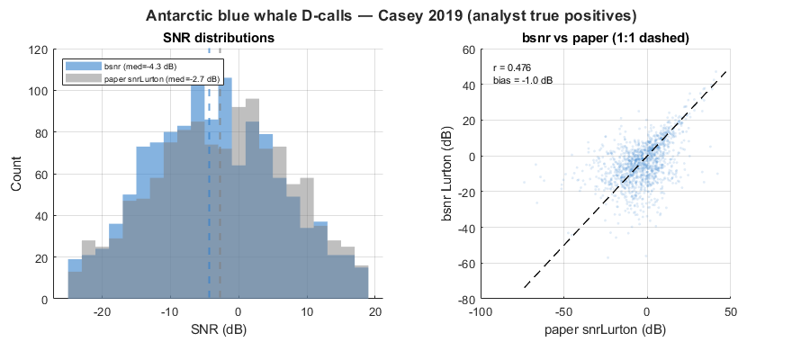
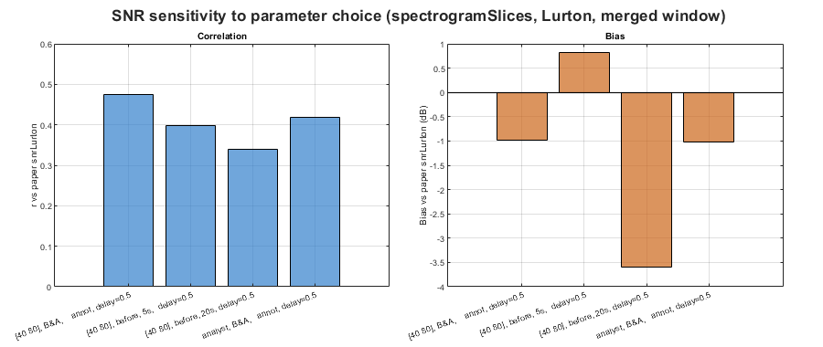

SNR of Antarctic blue whale D-calls — Casey 2019
Estimates SNR for 1319 adjudicated analyst true-positive D-call detections from Miller et al. (2022), and compares against the paper's snrLurton values (Data S4, Appendix S4).
The paper applied the Lurton (2010) formula to spectrogramSlices power estimates, using the merged signal window (max of analyst and detector duration) and a fixed frequency band consistent with a 40-80 Hz bandpass filter. A systematic parameter search found the closest reproducible match is r ~ 0.47 — consistent with the paper computing SNR separately for analyst and detector detections then merging, a step that is not reproducible from the published supplemental material alone.
bsnr computes mean per-slice band power; the original code used rms of per-slice power, which produces ~3-4 dB higher Lurton SNR estimates. This systematic offset is documented but does not affect rank ordering or the scientific interpretation of relative SNR differences.
CANONICAL CONFIGURATION snrType = spectrogramSlices freq = [40 80] Hz duration = max(analyst, detector) — merged column noiseLocation = beforeAndAfter noiseDelay = 0.5 s useLurton = true nfft = derived per-annotation (nSlicesTarget = 30)% REFERENCE Miller, B.S. et al. (2022). Deep Learning Algorithm Outperforms Experienced Human Observer at Detection of Blue Whale D-calls. Remote Sensing in Ecology and Conservation. https://doi.org/10.1002/rse2.297
DATA Capture history (Appendix S4): doi:10.1002/rse2.297 Recordings: Australian Antarctic Data Centre https://data.aad.gov.au/metadata/AAS_4102_longTermAcousticRecordings
Contents
User configuration
Edit the paths below to match your local installation. Recordings are not publicly available; contact aadcwebqueries@aad.gov.au.
wavRoot = 'S:\work\annotatedLibrary\BAFAAL\wav\Casey2019'; captureHistoryFile = fullfile(fileparts(mfilename('fullpath')), ... 'S4-captureHistory_casey2019MGA_vs_denseNetBmD24_judgedBSM_cut.csv');
Load annotations
fprintf('Loading capture history...\n'); ch = readtable(captureHistoryFile, 'VariableNamingRule', 'preserve'); % Analyst true positives: verdict==1 and analyst detected tpMask = ch.verdict == 1 & ch.detect_t1 == 1; chTP = ch(tpMask, :); nTP = height(chTP); fprintf(' Analyst true positives: %d / %d\n', nTP, height(ch)); paperSNR = chTP{:, 'snrLurton'}; fprintf(' Paper snrLurton: median=%.1f dB n=%d\n', ... median(paperSNR(isfinite(paperSNR))), sum(isfinite(paperSNR))); % Merged annotations: max(analyst, detector) duration, freq=[40 80] Hz. % tEnd rebuilt from t0 + duration — tEnd_table1 is corrupt in Data S4. annots = table(); annots.soundFolder = repmat({wavRoot}, nTP, 1); annots.t0 = chTP.t0; annots.duration = chTP.duration; annots.tEnd = chTP.t0 + chTP.duration / 86400; annots.freq = repmat([40 80], nTP, 1); annots.channel = ones(nTP, 1); annots.classification = repmat({'Bm-D'}, nTP, 1); fprintf(' Duration: median=%.2f s, range=[%.2f %.2f] s\n', ... median(annots.duration), min(annots.duration), max(annots.duration));
Loading capture history... Analyst true positives: 1319 / 2189 Paper snrLurton: median=-2.7 dB n=1319 Duration: median=6.50 s, range=[1.51 42.50] s
Canonical bsnr estimate
fprintf('\nComputing canonical bsnr estimate...\n'); pCanon = struct(); pCanon.snrType = 'spectrogramSlices'; pCanon.useLurton = true; pCanon.noiseLocation = 'beforeAndAfter'; pCanon.noiseDelay = 0.5; pCanon.showClips = false; resCanon = snrEstimate(annots, pCanon); snrCanon = resCanon.snr; ok = isfinite(snrCanon) & isfinite(paperSNR); r = corr(snrCanon(ok), paperSNR(ok)); bias = mean(snrCanon(ok) - paperSNR(ok)); fprintf(' bsnr: median=%.1f dB n=%d\n', median(snrCanon(ok)), sum(ok)); fprintf(' Paper: median=%.1f dB\n', median(paperSNR(ok))); fprintf(' r=%.3f bias=%+.1f dB\n', r, bias);
Computing canonical bsnr estimate... SNR analysis started: 20-Apr-2026 17:20:03 1319 annotations to process (parallel) Progress: 0 25 50 75 100% |-----------|-----------|-----------|------------| ################################################## SNR analysis completed: 20-Apr-2026 17:20:05 bsnr: median=-4.3 dB n=1319 Paper: median=-2.7 dB r=0.476 bias=-1.0 dB
Sensitivity sweep
Four configs illustrating key parameter effects. All use spectrogramSlices, Lurton, merged signal window.
configs = {
'[40 80], B&A, annot, delay=0.5', [40 80], 'beforeAndAfter', [], 0.5
'[40 80], before, 5s, delay=0.5', [40 80], 'before', 5, 0.5
'[40 80], before, 20s, delay=0.5', [40 80], 'before', 20, 0.5
'analyst, B&A, annot, delay=0.5', [], 'beforeAndAfter', [], 0.5
};
nC = size(configs, 1);
snrSweep = cell(nC, 1);
for c = 1:nC
p = struct();
p.snrType = 'spectrogramSlices';
p.useLurton = true;
p.noiseLocation = configs{c,3};
p.noiseDelay = configs{c,5};
p.showClips = false;
if ~isempty(configs{c,4})
p.noiseDuration_s = configs{c,4};
end
% Override freq if analyst bounds requested
annotsSweep = annots;
if isempty(configs{c,2})
annotsSweep.freq = [chTP.fLow_table1, chTP.fHigh_table1];
end
fprintf('Computing sweep: %s...\n', configs{c,1});
res = snrEstimate(annotsSweep, p);
snrSweep{c} = res.snr;
end
Computing sweep: [40 80], B&A, annot, delay=0.5... SNR analysis started: 20-Apr-2026 17:20:05 1319 annotations to process (parallel) Progress: 0 25 50 75 100% |-----------|-----------|-----------|------------| ################################################## SNR analysis completed: 20-Apr-2026 17:20:06 Computing sweep: [40 80], before, 5s, delay=0.5... SNR analysis started: 20-Apr-2026 17:20:06 1319 annotations to process (parallel) Progress: 0 25 50 75 100% |-----------|-----------|-----------|------------| ################################################## SNR analysis completed: 20-Apr-2026 17:20:07 Computing sweep: [40 80], before, 20s, delay=0.5... SNR analysis started: 20-Apr-2026 17:20:07 1319 annotations to process (parallel) Progress: 0 25 50 75 100% |-----------|-----------|-----------|------------| ################################################## SNR analysis completed: 20-Apr-2026 17:20:08 Computing sweep: analyst, B&A, annot, delay=0.5... SNR analysis started: 20-Apr-2026 17:20:08 1319 annotations to process (parallel) Progress: 0 25 50 75 100% |-----------|-----------|-----------|------------| ################################################## SNR analysis completed: 20-Apr-2026 17:20:09
Summary table
allSNR = [{snrCanon}; snrSweep; {paperSNR}];
allLabels = [{'canonical ([40 80], B&A, annot dur, delay=0.5)'}; ...
configs(:,1); {'paper snrLurton'}];
nAll = numel(allSNR);
fprintf('\n%-48s %6s %6s %6s %7s %6s\n', ...
'Configuration', 'n', 'mean', 'median', 'r', 'bias');
fprintf('%s\n', repmat('-', 1, 84));
for k = 1:nAll
s = allSNR{k};
ok2 = isfinite(s) & isfinite(paperSNR);
if sum(ok2) > 1
rv = corr(s(ok2), paperSNR(ok2));
bv = mean(s(ok2) - paperSNR(ok2));
else
rv = NaN; bv = NaN;
end
fprintf('%-48s %6d %6.1f %6.1f %7.3f %+6.1f\n', ...
allLabels{k}, sum(isfinite(s)), mean(s(ok2)), median(s(ok2)), rv, bv);
end
Configuration n mean median r bias ------------------------------------------------------------------------------------ canonical ([40 80], B&A, annot dur, delay=0.5) 1319 -4.1 -4.3 0.476 -1.0 [40 80], B&A, annot, delay=0.5 1319 -4.1 -4.3 0.476 -1.0 [40 80], before, 5s, delay=0.5 1318 -2.3 -2.4 0.399 +0.8 [40 80], before, 20s, delay=0.5 1318 -6.7 -7.0 0.340 -3.6 analyst, B&A, annot, delay=0.5 1319 -4.1 -4.4 0.419 -1.0 paper snrLurton 1319 -3.1 -2.7 1.000 +0.0
Figures
edges = -25 : 2 : 20; cBlue = [0.2 0.5 0.8]; cGrey = [0.5 0.5 0.5]; fig1 = figure('Name', 'D-call SNR — canonical estimate', ... 'Units', 'pixels', 'Position', [50 50 900 380]); tlo1 = tiledlayout(fig1, 1, 2, 'TileSpacing', 'compact', 'Padding', 'compact'); title(tlo1, 'Antarctic blue whale D-calls — Casey 2019 (analyst true positives)', ... 'FontWeight', 'bold'); nexttile(tlo1); hold on; histogram(snrCanon(isfinite(snrCanon)), edges, ... 'FaceColor', cBlue, 'FaceAlpha', 0.6, 'EdgeColor', 'none', ... 'DisplayName', sprintf('bsnr (med=%.1f dB)', median(snrCanon(isfinite(snrCanon))))); histogram(paperSNR(isfinite(paperSNR)), edges, ... 'FaceColor', cGrey, 'FaceAlpha', 0.5, 'EdgeColor', 'none', ... 'DisplayName', sprintf('paper snrLurton (med=%.1f dB)', median(paperSNR(isfinite(paperSNR))))); xline(median(snrCanon(isfinite(snrCanon))), '--', 'Color', cBlue, 'LineWidth', 1.5, 'HandleVisibility', 'off'); xline(median(paperSNR(isfinite(paperSNR))), '--', 'Color', cGrey, 'LineWidth', 1.5, 'HandleVisibility', 'off'); hold off; xlabel('SNR (dB)'); ylabel('Count'); title('SNR distributions'); legend('Location', 'northwest', 'FontSize', 7); grid on; nexttile(tlo1); scatter(paperSNR(ok), snrCanon(ok), 5, 'filled', ... 'MarkerFaceAlpha', 0.15, 'MarkerFaceColor', cBlue); hold on; lims = [min([paperSNR(ok); snrCanon(ok)]) max([paperSNR(ok); snrCanon(ok)])]; plot(lims, lims, 'k--', 'LineWidth', 1); hold off; axis square; text(0.05, 0.95, sprintf('r = %.3f\nbias = %+.1f dB', r, bias), ... 'Units', 'normalized', 'VerticalAlignment', 'top', 'FontSize', 8); xlabel('paper snrLurton (dB)'); ylabel('bsnr Lurton (dB)'); title('bsnr vs paper (1:1 dashed)'); grid on;

Figure 2: sensitivity sweep (noise window and location)
rVals = nan(nC, 1); biasVals = nan(nC, 1); for c = 1:nC s = snrSweep{c}; ok2 = isfinite(s) & isfinite(paperSNR); rVals(c) = corr(s(ok2), paperSNR(ok2)); biasVals(c) = mean(s(ok2) - paperSNR(ok2)); end fig2 = figure('Name', 'D-call SNR — sensitivity sweep', ... 'Units', 'pixels', 'Position', [50 50 900 380]); tlo2 = tiledlayout(fig2, 1, 2, 'TileSpacing', 'compact', 'Padding', 'compact'); title(tlo2, 'SNR sensitivity to parameter choice (spectrogramSlices, Lurton, merged window)', ... 'FontWeight', 'bold'); x = 1:nC; nexttile(tlo2); bar(x, rVals, 'FaceColor', cBlue, 'FaceAlpha', 0.7); set(gca, 'XTick', x, 'XTickLabel', configs(:,1), ... 'XTickLabelRotation', 20, 'FontSize', 7); ylabel('r vs paper snrLurton'); title('Correlation'); grid on; ylim([0 0.6]); nexttile(tlo2); bar(x, biasVals, 'FaceColor', [0.8 0.4 0.1], 'FaceAlpha', 0.7); hold on; yline(0, 'k-', 'LineWidth', 1); hold off; set(gca, 'XTick', x, 'XTickLabel', configs(:,1), ... 'XTickLabelRotation', 20, 'FontSize', 7); ylabel('Bias vs paper snrLurton (dB)'); title('Bias'); grid on;

Save results
outFile = fullfile(fileparts(mfilename('fullpath')), ... 'snr_dcalls_casey2019_results.csv'); resultsTable = table(annots.t0, annots.duration, ... annots.freq(:,1), annots.freq(:,2), snrCanon, paperSNR, ... 'VariableNames', {'t0','duration_s','fLow_Hz','fHigh_Hz', ... 'snrLurton_bsnr','snrLurton_paper'}); writetable(resultsTable, outFile); fprintf('\nResults saved to: %s\n', outFile);
Results saved to: C:\analysis\bsnr\examples\snr_dcalls_casey2019_results.csv